The Big Trip diary
Thirteen weeks around Australia in Max the Cruiser, written up as we went. Pick a week, or just scroll.
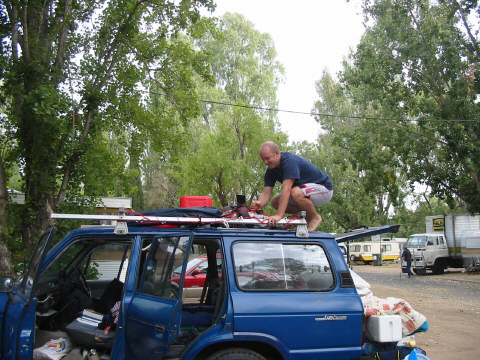
Week 1Sydney to Adelaide28th March to 3rd April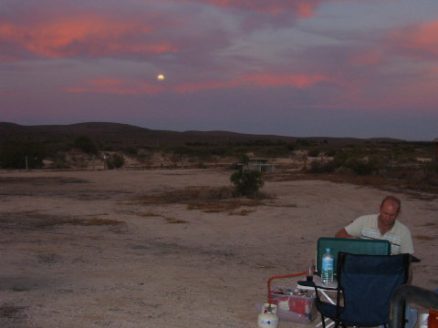
Week 2The Nullarbor4th April to 10th April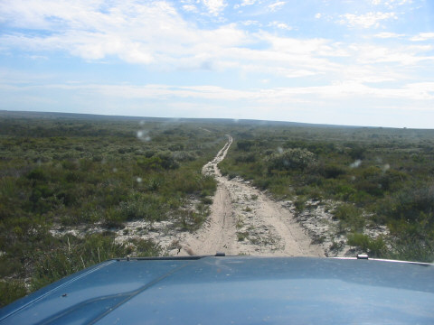
Week 3Esperence to Perth11th April to 17th April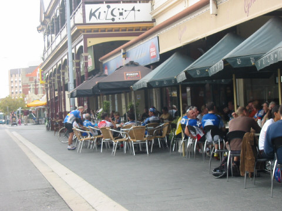
Week 4Perth to Kalbarri18th April to 24th April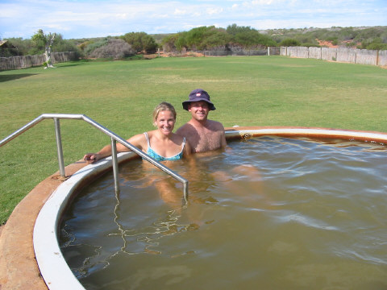
Week 5Monkey Mia25th April to 1st May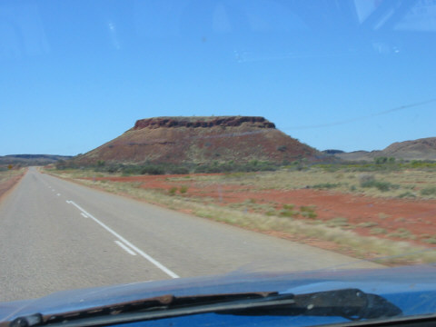
Week 6Karijini, Broome2nd May to 8th May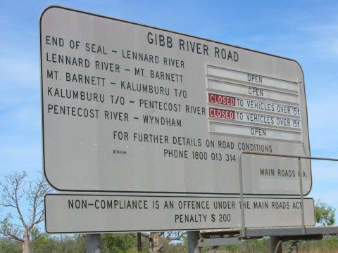
Week 7The Gibb River Road9th May to 15th May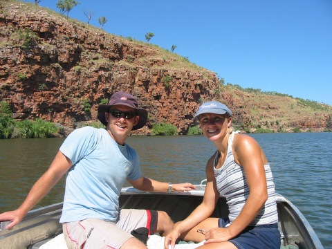
Week 8Bungle Bungles16th May to 22nd May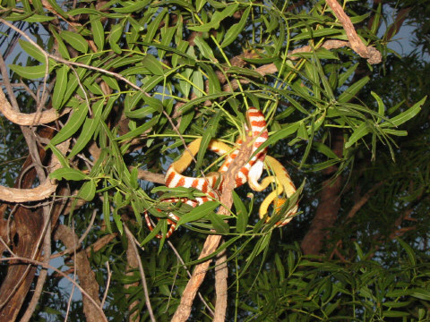
Week 9Katherine & Litchfield23rd May to 29th May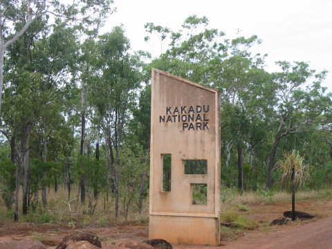
Week 10Darwin to Kakadu30th May to 5th June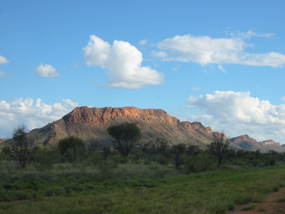
Week 11Alice and a big red rock6th June to 12th June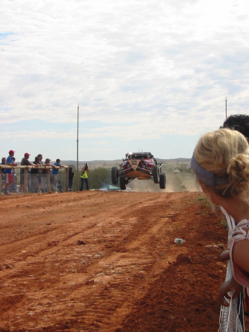
Week 12Oodnadatta track - Flinders Ranges13th June to 19th June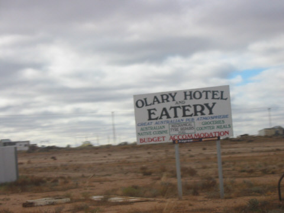
Week 13The journey home20th June to 24th JuneWeek 1 · 28th March to 3rd April
Sydney to Adelaide
Day 1 – 28th March
Well, we have completed day 1 of the Big Trip! Sitting in our tent now in Wagga Wagga after a day on the road. Scenery very dry looking and deserty. Max is going very well but we need to stop the roof stuff from falling off. Just had a BBQ and about to turn in for the night – leaving early in the morning for Pink Lakes.
Possums joined us for our first BBQ of the trip last night and we met our first mad Aussie. Bed for 10pm with the intention of being on the road for 7am… … … 8:50am and we’re on our way
Day 2 – 29th March
Long day’s driving – approx 600kms (see stats page ;-) and Max is looking hard on diesel eeek! Got to Pink Lakes in Murray-Sunset National Park, Victoria and it was totally deserted! We set up camp, lit our first campfire and had a (Scotch) whiskey. Lots of stars and very peaceful.
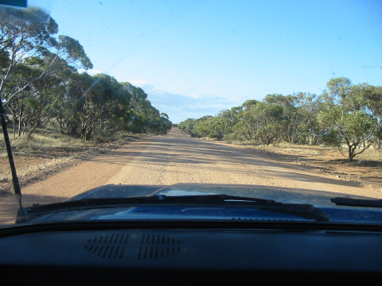
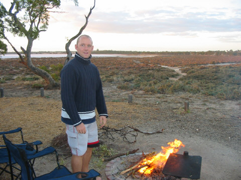
Day 3 – 30th March
Went to bed at 9pm and slept for 10 hours – all the driving wore us out. Had lovely pancakes and a cuppa tea before sorting Max out this morning. We then headed off on the bikes to explore the salt lakes. Very barron and eerie. After an hour or so Dean’s bike got a puncture so we had to walk back. Saw 2 (big) red Kangaroo’s.
Took Max for his first off-road experience on Salt Bush Flat Track. Only 8km round trip but it gave him and us a taste of things to come. (Max) handled it no probs but he wouldn’t go back into 2WD drive afterwards! Until Dean (the non-mechanic) pushed the doofter, attached to the thingumy-bob to make the yoke engage with the what-do-you-call-it and it slipped back to 2WD – no worries! Later… we did an 11km run in just over 50 minutes. Then we had to have nudie showers (under Max’s water tank) in the bush.
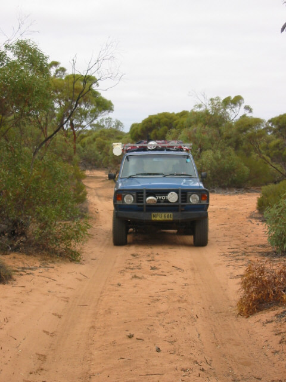
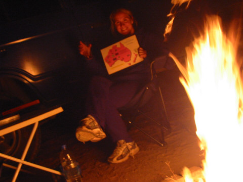
Day 4 – 31st March
Rose early (7am) not bad to say we were in bed asleep for 9pm! Quick brekky before heading off at 8am for Deep Creek Conservation Park (because there’s a deep creek and they’re trying to conserve it) - ~150kms south of Adelaide. Lunch in Victor Harbour then a bit more off-road to Cobbler Hill Camp Ground in the Park. Went for a quick bush-walk before having dinner in the rain! and wind! and general cold! My beany hat made its first appearance.
Bed at 9pm!!!
Kangaroo Count: 12
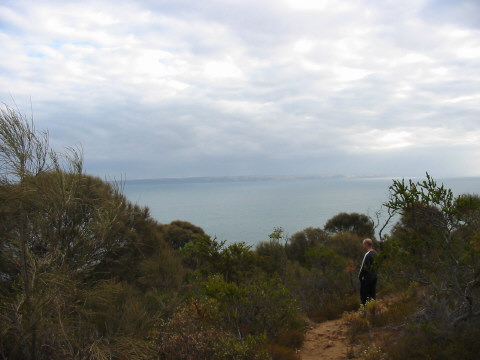
Day 5 – April Fools Day
Up at 5:30am!! Orla has a cold (well a sniffle) so we went for a 6km walk to Blowhole beach. Back and had tea before 9:30. Was just chillin in the sun when we met a great bloke called Bill who gave us loads of advice for the journey ahead.
Took Max on a serious 4WD track and he managed beautifully – Dean was more stressed at me than anything! In McLaren Vale now and just purchase a few cheeky bottles of red for the trip! Off to Adelaide now - looking forward to a shower at Derek and Leanne’s.
What! Derek and Leanne are not home and Derek is not answering his mobile… who you gonna call?… Deirdre O’Meara. As usual she comes up trumps with a second number for Derek. Had a lovely evening with D&L – pizza and chats.
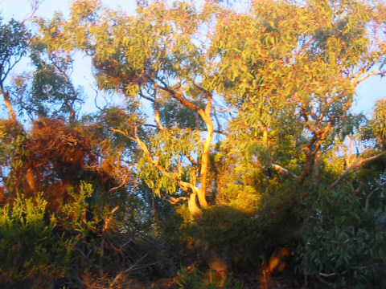
Day 6 – 2nd April
Chores, chores, chores in Adelaide. Sorting out Max and buying supplies for the next leg of the trip. Went for a swim then a meal and a few drinks with Derek, Leanne and Kerry.
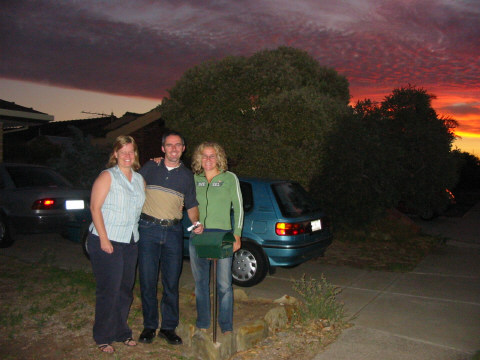
Day 7 – 3rd April
Had a lovely day in the Barossa Valley with Derek and Leanne (that’s after we stunk out Max with Diesel, I got in a huff and Dean got stubborn!) All forgotten after our first few sips of Seppeltsfield vino. We then went on to Jacob’s Creek and two lovely boutique wineries (Charles Melton and Rockford) during this Leanne was videoing everything and Max took centre stage. Had a bite then said our goodbyes to D&L – it was lovely seeing them in newlywed bliss.
We then headed North through the Clare Valley and in the dark went in search of a campsite in Wilbarra forest – very spooky! We were nearly there when Max decide to spit off his trusty water tank on a dirt road. All dramas then as we had to drain the water out and shove it into Max. We’ll have to get it welded on again in Whyalla. Eventually got there, ate and went to bed.
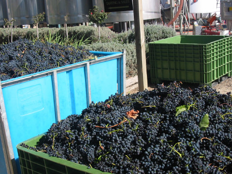
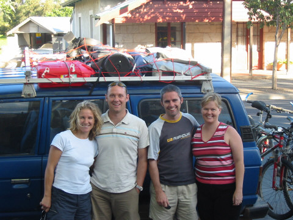
Week 2 · 4th April to 10th April
The Nullarbor
Day 8 – 4th April
Went for a shortish bike ride (after fixing my tyre) and found a 400yr old Red River Gum tree – ‘The King Tree’. Packed up and headed in bright sunshine (approx 27C) to Whyalla (Fitzgerald Bay campsite).
Well, Fitzgerald Bay is definitely nothing to write home about! Awful wasteground with terrible facilities with flies to beat the band! Arrived too late to find somewhere else so had to drink lots of red wine to ease the pain. The only consolation was the sunset.
Day 9 – 5th April
Remember we said that it was a disaster that Max’s water tank fell off. Well, that couldn’t been further from the truth. We pulled into Whyalla last night to buy some milk from the local store. The friendly shopkeeper pointed us to the plumbers supplies to get Max fixed.
The next morning they supplied us with brackets and rang a local fella (Wayne Carn) to do a cash job. We ended up at his place where he had all the tools to do the job. All done, no probs. He then showed us his passion - Aquaculture! His 10 years of research has enabled him to cultivate Marin (a sort of fresh water Crayfish) in fibreglass cages in his backyard. It was a hi-tec, but completely natural fish farm. He hopes to expand the fish tanks into the 000’s and break into the tourist industry. He was an amazing man who was passionate about simple things: his hobby and generally helping people along. I’m sure that his passion will translate into a healthy tourist venture and he’ll be remembered for his work. THANKS WAYNE!!
Wayne’s wise words:
“Love your family and you’ll have a great life”
“Goodness and finding good in people is my God”
“Find goodness in people and you won’t be afraid of death”
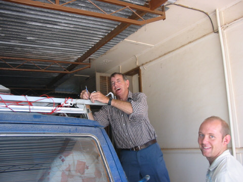
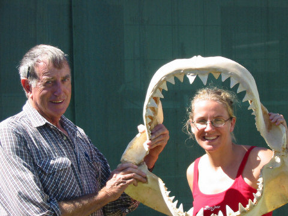
Day 10 – 6th April
We got up before sunrise and drove to Mt Wudinna – a smaller version of Uluru in the North of the Eyre peninsular. We climbed it and watched the sunrise which was a spectacular sight given that we’re normally in bed at that time. We went back to the campsite and had a breakfast of tea and porridge!
We had intended on driving to Streaky Bay by the coast but as it was a dull and cloudy we decided to head straight for the Nullarbor instead.
We arrived at the Nullarbor Roadhouse which is a bit of a dump so cooked up a massive dinner and contemplated our first night in Max!
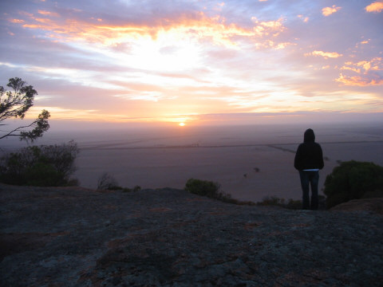
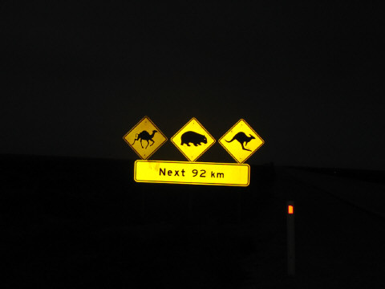
Day 11 – 7th April
Crossing the Nullarbor
We were on the road for 7am as there was lots of driving planned as there isn’t much to see between here and Esperence – over 1000kms away. We did stop at Bunda Cliffs though which run for thousands of kms into WA.
We planned to head for Balladonia today which is over 700kms away so we took it in 150km chunks each. Not much happened for the first 400kms except seeing the odd Dingo (also 3 wedge-tailed eagles) and of course crossing into WA. On the way to Caiguna we ran into a few locusts which messed up the windscreen. However, closer to Balladonia, they seemed to get more numerous. Later I spotted what I thought was a dust cloud about a km ahead – wrong! – it was a swarm of locusts. Millions of em and they splatted on the car like hailstones! In fact, so many were killed that the road began to look like it had just been resurfaced and there were loose chippings everywhere.
25kms from Balladonia and disaster struck, Max had a puncture! Of course we knew how to change the wheel (not!) and that the spare was at the correct pressure! Eventually through dodgy practices (not to be mentioned on this site) we managed to change the wheel and limped into Balladonia – a very welcome, nice spot.
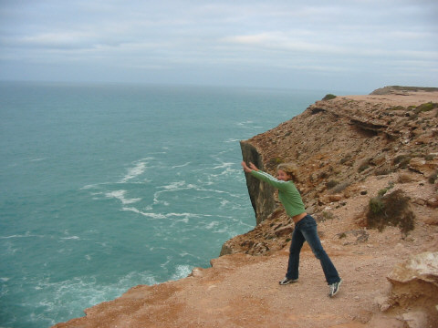
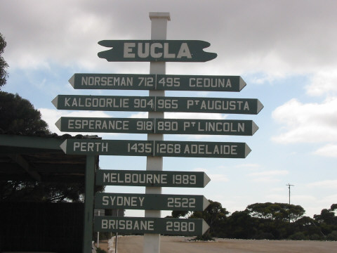
Day 12 – 8th April
Met a few lovely people at Balladonia: a couple from the ACT called Lou and Helen who gave us lots of tips re: Max – the puncture etc; a Queensland couple who advised us to keep our shoes indoors when crossing the Nullarbor as his were chewed by a Dingo!; and a family of four from WA. So, today we drove at 70/80kph (still on the spare wheel) into Norseman. Had lunch, spoke to a few people about tyres (is there any other topic of conversation these days??) then headed to Esperence and yet more tyre outlets! Met a fantastic man called Heyden Thomas who gave us lots of advice. In the end we finished up with four (nearly) new tyres and a spare wheel and extra spare tyre. Let that be the end of tyre talk for now please!!!…
Camped at Esperence at a decent park.
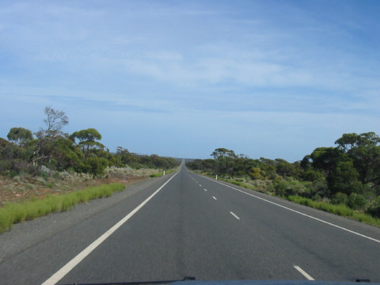
Day 13 – 9th April
Woke after a good sleep, packed Max and headed for Cape Le Grand NP – 50km East of Esperence. Camped at Lucky Bay – a beautiful spot but a little busy as its Easter weekend. Decided to go for a swim in the amazingly blue sea just two minutes from the campsite. For some reason we decided to walk along the beach for a while first.
Imagine this if you will… you’re on the other side of the world, you’re in one of the least visited states in Australia, you’re in one of the smallest towns in WA (over 1000kms from Perth), you’re in a National Park away from civilisation, you go for a walk along a deserted beach in Cape Le Grand NP, and……you bump into an old friend from college who you haven’t seen in 8 years!!!
HOW WEIRD IS THAT!
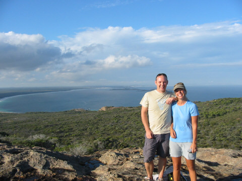
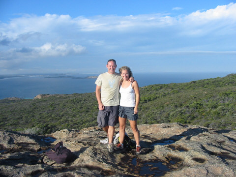
Day 14 – 10th April
Lucky Bay is amazing. I went for a run along the beach first thing – Dean has a sore knee then we both went for a body-surf in the waves – great way to start the day. Then we headed back for brekky and a few chats with other campers. Met a Swiss couple called Stefan and Charlotte who are on a similar route to us. Headed out for a scramble on the rocks and onto a trail where where we spotted a snake basking in the sunshine. However, it started raining not long after so we explored the rest of the NP in Max where we spotted a Goanna. At sunset I went for a swim and was awe inspired by the colours of the rocks, sky and water – breathtaking.
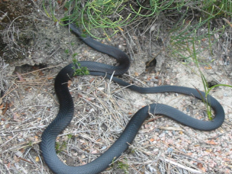
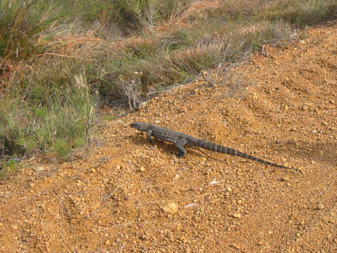
Week 3 · 11th April to 17th April
Esperence to Perth
Day 15 – 11th April
Left Lucky Bay with the intention of going to Cape Arid NP but turned into Orleans Bay on the way and decided to chill out there instead. Had a half-cooked omlette (the gas ran out!) then waded over to Toad island and scampered to the top to spot some lizards. We then headed back to Esperence and chilled with a coffee and cake (what a luxury) as we waited for Sarah to come back from Woody island. The 3 of us then headed off to Stokes NP (80km west of Esperence) driving into another beautiful sunset. Typical us, we decided to do our first serious 4WD adventure in pitch black and in a totally deserted place (this after Sarah maimed a local inhabitant! - Kangaroo) Some of the sand-dunes were a bit scary but Max came good in the end. Had a great evening with Sarah, chatting, cooking risotto and drinking copious amounts of red wine. Sarah is a cool chick! The only minor distraction was the disfunctional family next to us – the man was a big hairy monster, very drunk and playing crap loud music.
Day 16 – 12th April
The next morning we all awoke very early and a little bit fuzzy from all the vin-rouge. Went for a walk to clear our heads and came across a cool sand-dune. Went for a swim in the bay around the corner and checked out some fish with the snorkel. After that we decided to move on – Sarah headed down the dirt track to Fitzgerald NP and we hit the bitumen to Albany. Absolutely brilliant to see Sarah again after such a long time – last night was great to just sit and chat about anything and everything.
Arrived in Albany and checked into campsite (unpacked Max, put up tent etc) all before 3:30pm. Luxury, we had some daylight to actually check out a place. Went for a cycle around the town and then I phoned by distant relative (Eileen) to invite ourselves around for a cuppa.
We met up with Eileen and her husband John and after an extensive tour of the house, ordered pizza and talked about John’s occupation: Hypnotherapy and Massage. John showed us a few simple Neuro-Linguistic-Procedures (NLP) which we promise to use at the right moments.
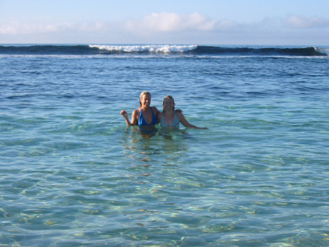
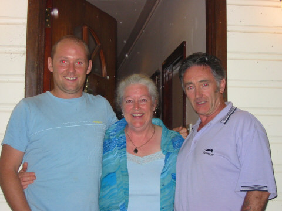
Day 17 – 13th April
Intended on moving on to Pemberton today but have to hold on till tomorrow to get Max’s starter motor fixed, its starting to get a bit more dodgy. So spent the day around Albany – Emu Point and Middleton. I went for a coffee at the Esplanade Hotel and read my book while Dean went off in search of a compressor and shovel ahead of our first serious 4WD adventure excursion – I just can’t face another garage!
By the way reader, if you’re wondering what the weather has been like over the last few days – CRAP! just about sums it up.
Day 18 – 14th April
While we were waiting for Max to get repaired we found a great coffee place (Naked Bean) and used the time to update this amazing website! Called into Eileen and John to say goodbye and then hit the road again. Drove through Denmark and then did the ‘Valley of the Giant’s’ Tree top walk (A 40m suspended walkway through the Jarrah and Red Tingle trees). Then drove through more giant forests to Warren NP where we set up camp and had our first campfire for a while. (Good to be back in the bush)
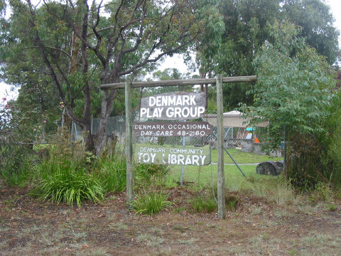
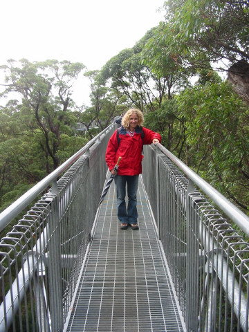
Day 19 – 15th April
Woke to the sound of children – can’t wait till Easter Hols are over! No breakfast - instead we climbed a big feckin tree Bi-centennial tree to over 65m! Has to be said, I was sh**ing myself half way up – but suprising Orla pushed me on. (I later learned that she was feeling the same way too.) Not bad for before 9am! Absolutely amazing view though and I now totally appreciate what (bush)fire watchers must do everyday. Climbed down then drove the 10km to Pemberton to stock up on the essentials – food, diesel and coffee. Then we headed west (at about 12pm by this time) to start our first 4WD trek – BIG UP to Si and Catherine for the 4WD book. Route: Pemberton to Augusta via Lake Jasper and Black Point. Total distance 145km.
Started off on bitumen – no worries; then graded track – keep going; then compact sand track – fair enough; then loose sand track – hmmmm; then rutted, uneven, steep, very thin, deep sandy track – OH SHIT! Tyre pressure (for those who are interested) was reduced to 25 PSI and the front hubs were engaged to 4WD mode. In fairness, Max flew it, only once did he come close to stopping and we never engaged low ratio (gears). At the end there was a bit of sweat on my brow but we made it to Black Point and decided to camp there for the night – a whole 50km from the bitumen. It was well worth it though, we had a beach pretty much to ourselves and a great campsite (complete with campfire) apart from the kids that is!
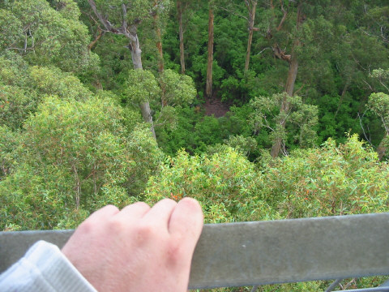
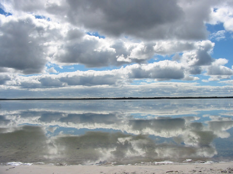
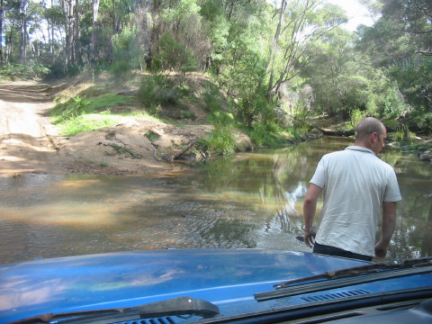
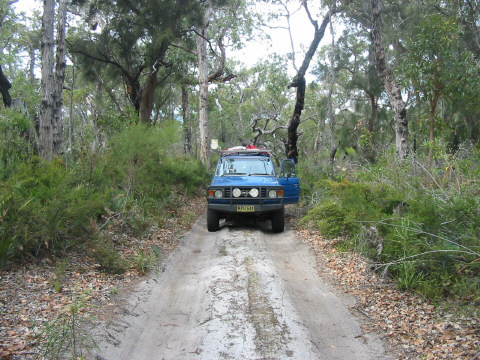
Day 20 – 16th April
Went for a morning stroll at Black Point along the rocks and saw lots of people fishing for salmon including one enthusiastic man with ‘Salmon King’ written on his t-shirt. Then went for a swim in the clear waters on yet another beach to ourselves. Packed up and hit the road directly for the Indian Ocean (Margaret River area).
Went for a dip at Prevelly where the serious surfers go and then pitched our tent at Margaret River Caravan Park. Walked into town and had our first pint of the holiday at the Corner Bar (Margaret River Hotel) (and it was a pint too!)
Day 21 – 17th April
Up and left the campsite early and went straight to Lake Cave – a 72m deep, 80m long, 10m wide, water-filled cave with impressive stalactites, stalagmites and other cave sculptures.
Drove to Yallingup but since it wasn’t a great day we didn’t go in for a swim. Instead we drove on to Busselton.
Spent a lovely relaxing afternoon at the Esplanade Hotel, Busselton with Louise Nally from Bunclody – our mothers play bridge together. I think we bored Dean silly with talk of home and the pro’s and con’s of Ireland vs Australia but it was good.
Said our goodbye’s and drove the 3hrs North to Fremantle – Freo to those in the know. My spacial awareness abilities (or lack thereof) came in to play while trying to navigate Dean and Max to our campsite. Eventually we made it and amazingly we were still on talking terms when we arrived.
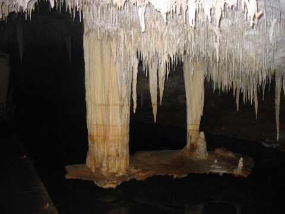
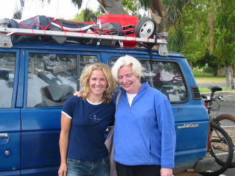
Week 4 · 18th April to 24th April
Perth to Kalbarri
Day 22 – 18th April
Intended to, and actually got up early enough to go to Rottnest island but didn’t. Partly because it would’ve used all of the days budget before buying anything and secondly because it wasn’t great weather. So what does one do?
We cycled into Freemantle CC at around 8:30am and found the Cappuccino strip – well, if we can’t go to Rottnest we can at least have a coffee and banana bread. We ended up joining a bunch of (40 or 50) bikers (serious bikers, not shorts and t-shirt wearing foreign tourists like us) for morning coffee.
Before we knew it we had joined a group of 5 or so old(ish) men for their recovery ride back to Perth – a mere 20kms. Recovery ride it was not! It took a dip at Cottesloe beach and a monster BBQ back at camp before I’d recovered. Seriously though, the ride was great – the lads really did their best to show us Perth / Freo in a good light and it worked. (Where will we come back to in Oz????) The Swan river is nearly as impressive as Sydney harbour – nearly. The bike lads were just another example of the great people we’ve met on the trip so far.
Finished the day with a pint of Pale Ale in the Little Creatures brewery in Freo.
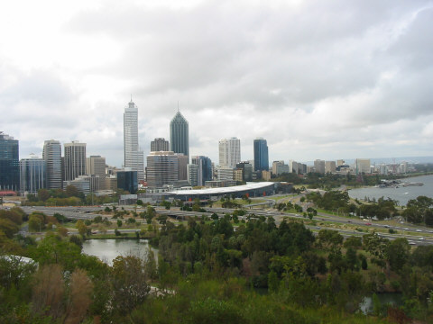
Day 23 – 19th April
Woke to rain splattering on the tent but then the sun came out – basically it has been rain vs sun all day. Packed up and went to Kalamunda about 40km East of Perth city and the lovely Darling range (hills) area. Got caught in a shower while crossing the Mundaring Weir after lunch (exciting ham, cheese and tomato sandwiches for the nth time!) We then got on the bikes and did the Mundaring Mountain Bike Loop through the forests (15.5km) – very cool. Headed north again to Gilderton by the coast and arrived in darkness. Dean cooked up a BBQ, we had a whiskey and it took him 15mins to beat me twice at chess. I must think ahead more! J
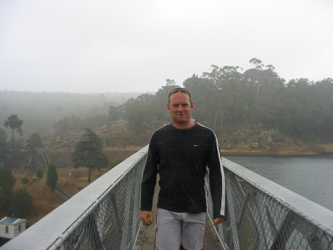
Day 24 – 20th April
Woke, breakfasted then cleaned the stove cos it needed it! Yep, exciting day ahead. Drovve 2kms to ‘Dog Beach’ and got in … for about 20 seconds before we noticed a nasty smell! A shit-pipe perhaps?? Well, we didn’t stay around to investigate but instead headed back to the beach near the campsite. We got in and were promptly hit by some massive Indian Ocean waves. Drove around the houses (actually around Lancelin to the Nambung NP) to the Pinnacles.
The Pinnacles are fantastic (especially since the sun decided to shine at the time). Whoever said they weren’t worth the detour was either mad or hadn’t been there. Out of nowhere, vast boulders of limestone jut out from the sandy desert floor. V impressed.
Moved on to Jurian Bay and a campsite next to three pissed up lads – great! Up early I think tomorrow.
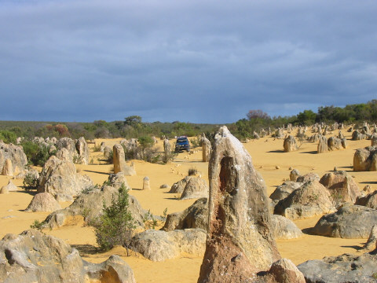
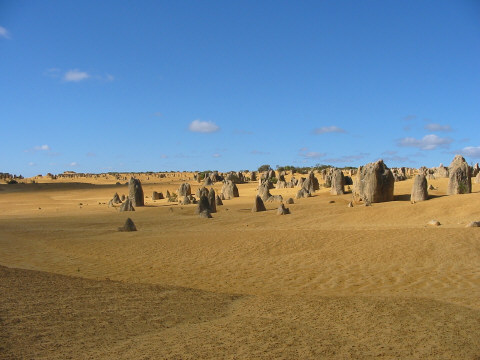
Day 25 – 21st April
Had a really early start – 5:45am – well left the campsite at 6:22 and were on the road. It was great as we arrived in Geraldton in time for brekky at 8:30. Chilled there for a while – nice little town if a little quiet. Before going to Kalbarri we decided to take a little diversion inland to Hutt River Provence – a 75km square farm that is a (legally) independent principality like Monaco! The farmer, now Prince Leonard(!) seceded his land from Australia 34 years ago today after a row over wheat quotas. He now rules his own little country complete with currency, stamps and flag – he even has a statue outside! The whole experience was bizzare and we were given the ‘Royal’ tour of the place – a bit run down and dry really – by Prince Leonard himself together with one of his servants (Sir Steven, the minister for communications.)
After the Provence we moved to a little beach on the way to Kalbarri called Lucky Bay. Lucky it was not as Max got bogged in the sand!! We spent an hour digging sand before we finally got him moving again. Had a well deserved swim (beautiful), lunch and then headed for Kalbarri where we had another swim and met Sarah in advance of our 2 day hike down the gorge.
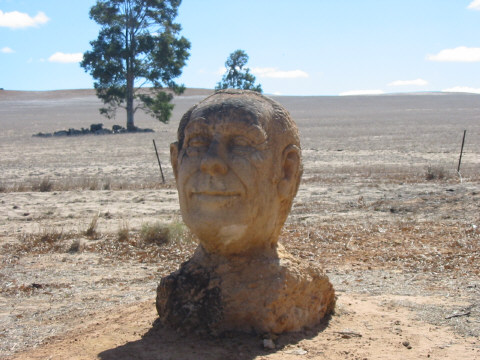
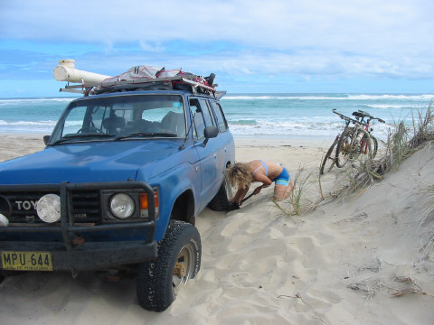
Day 26 – 22nd April
Today is the first day of a 2 day walk (trek, hike, whatever) down Murchison River Gorge – about 13km outside of Kalbarri. Its also the first time on the trip that we’ll sleep without our trusty matress. We packed up and headed to the gorge via the supermarket and the local CALM office to get some advice and a map (Oh yeah, and the local camping store to pick up some fly nets – thanks to a tip from two 5yr old girls we camped next to.)
So the plan was: all drive to Z-bend (the end) where we leave Sarah’s car, then pile in Max and drive to Hawks Head (the start) and start. All valuables (wallets, mobile phones, car keys etc) are stored in Max’s glove box. Off we go…
Problem 1, how the feck do we get down! Not really a good sign when you set off for a 2 day hike and don’t make it past the car park in the first hour! Eventually we made it down thanks to some advice from an old timer. Flies, flies, flies – resale value of those fly nets now $20 each! Fantastic scenery, very hot day, bounding along, all happy. Might just make it to Little Z (about two-thirds of the trip) by evening. Not so, but found a good camp spot – fire, food, bed (8:00pm).
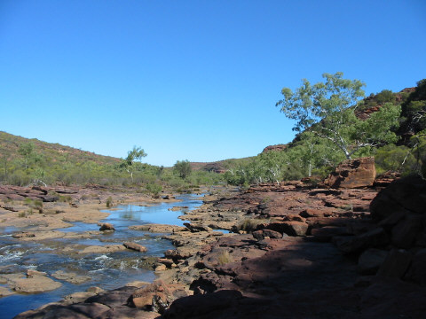
Day 27 – 23rd April
Suprisingly, we all slept pretty well considering. We were up and walking by 7am - keen to find Little Z and hence have some idea where we were and how much further we had to go! I think we’d all admit that when we didn’t find it by 8am – a element of doubt started to enter our heads. Finally, 8:30 and we were walking to what we were almost sure was Little Z. Panic over (for now) so we had a bit of brekky to celebrate.
The route started to get a bit harder after Little Z – more up and down on the rocks and even a small bit of climbing! Our next marker was a tributary that joined the gorge maybe an hour or so’s walk further down. 2 hours went by and we still hadn’t passed it – whats more we were down to our last 2 litres of water! (bearing in mind that the river water wasn’t drinkable, this was a bit of a problem) A little bit of anxiety definitely set in for all of us as we started to ration water. Whats more, we were walking along when Sarah shouted “Oh Shit!” We all stopped and that’s when she told us she had left the keys of her car in Max way back at Hawks Head!!!! So we were effectively walking to the car but away from the keys! Oh well, we’d just have to get a lift.
Another two hours and still no tributary… instead, Z-bend itself. The joy we felt when we actually saw somebody swimming in the river! We had made it (save the climb out of the gorge.) It was doubly ironic that the first person we saw in the gorge turned out to be the same person that gave us a lift back to Hawks Head. Big up to Lou and George, the French-born Aussies from Perth.
Day 28 – 24th April
Stayed at Red Bluff again and chilled out this morning. Said goodbye to Sarah but planned to meet her again at Coral Bay. Drove to Hamelin Pool to see the Stromatolites – ancient organisms which are the first known living things to evolve on Earth 3.7 Billion years ago – quite significant but they just look like rocks. Flies are a nuiscence to say the least.
Week 5 · 25th April to 1st May
Monkey Mia
Day 29 – 25th April
Chilled in Denham and found out about Francois Peron NP – stocked up and headed to the Peron Homestead where we soaked in a natural hot spring tub for a while – nice!
Headed further north into the Park to Gregory’s campsite right on the shoreline. Had a lovely evening with BBQ and wine except Dean trapped his finger in the table which was ‘sore’ and the moths shared our food.
Day 30 – 26th April
Spent a few hours in the morning at the campsite just chilling out, swimming etc. Then the flies became a little too hard to handle even with the fly nets so we hopped in Max and headed to Cape Peron. We found ourselves on a long deserted beach overlooked by red sand and rock, with crystal blue waters. Took a stroll along the cliff when all of a sudden we were treated to our own personal Dolphin display! We stripped off and ran into the sea (anticipating being able to swim with them.)
It was amazing, they came right up to the shoreline, rounding up fish, frolicing and generally entertaining us. They stayed for ages and we took close to a 100 photos of em (and even a few videos!) The whole experience was definitely a highlight for both of us.
From there we walked to Skip-Jack point and from the lookout we saw turtles, manta- and sting-rays and a few shovel nosed sharks – a marine feast! Got back to the campsite and discovered we didn’t have much water so we headed back to Denham and civilisation. Ate Mackeral thanks to a lovely family and chatted to (and drank with) 3 Canadians.
Day 31 – 27th April
Denham to Canarvan is not a long drive (by Aussie standards) but then it shouldn’t be because there’s absolutely nothing to see. You know you’re in big open country when you see a signpost indicating a Petrol station 120kms away! So we drove it pretty quick and arrived at Canarvan at 11am. Had a quick look around Canarvan (tourist info, Woolies and a local coffee shop) before checking in to the Caravan park complete with swimming pool. Needless to say the rest of the day was spent lounging around the pool – blis! Dinner again consisted of more free fish from the Snowy family (Phil, Jo, Jack and Rowan)
Day 32 – 28th April
(In a Geordie accent)
“You shall have a fishy, in your little dishy”
“You shall have a fishy, when the boat comes in!”
In fact, you shall have Salt n Pepper Squid, BBQ Crayfish and Snapper! Need I say anymore about the day?! Oh yeah, and BEER too! So we blew our (daily) budget by a factor of 2, so what it was great day!
Woke pretty early and had a cuppa while updating this site then we rushed around like mad buying things and sorting every thing out for the next few days (most importantly another wheel (rim) for Max.) Drove to Coral Bay once it cooled down a bit, met Sarah and the fish feast commenced!
Day 33 – 29th April
After our fish feast last night (I even loved it and I’m not a big fish fan) Sarah treated us to a fruit feast this morning. Watermelon, Bananas, Paw Paw and other fruity delights topped with yoghurt – yummy.
Then the 3 of us sauntered down to the beach for a swim, snorkel and sunbathe – ahhh it’s a hard life! Spotted Stingrays, Parrot fish and lots of others (need to brush up on my fish knowledge.) Dean was the envy of the beach with Sarah and I striving for a ‘more complete tan’ shall we say (here here). Sorry no photographic evidence readers!
Had a coffee and said our goodbyes (again) to Sarah – then Dean and I hit the 4WD track to 9-mile beach where we pitched for the evening. A great day, really liked Coral Bay.
Day 34 – 30rd April
Did we ever mention that for the last few weeks the flies have driven us nuts? Well, today was no exception however this time I was completely sick of insects given that I’d secured nearly 50 mosquito embraces the night before. Got up early this morning to drive the 80km of 4WD to Cape Range NP. A drive that meant crossing the (unbeknown to us) dry Yardie Creek just over the border of the park.
On reaching Ningaloo Stn, Orla took over the wheel to Lefroy Bay where we had a swim and lunch. Heading on (Dean at the wheel) it wasn’t long before we hit Yardie Creek and our camp for the night. We deferred the gorge walk until tomorrow, instead went for a cooling dip in the aquamarine water just metres from our tent. 35 degree heat – perfect!
Day 35 – 1st May
OK reader, you’ve guessed it – I am having a burst of writing! I’m sat in a café in Exmouth on May 2nd writing the accounts of the last 2 days. Orla is reading the paper so I probably have time to rewrite my thesis!
What happened today? (Yesterday) We forced ourselves out of our tent at 6:30ish to watch the sun rise over Yardie Creek – hoping to spot rock-wallabies in the process. V impressive too. We walked up the North side, crossed over (not much water in it unfortunately) and back the South side where we noticed a sign saying “Nature Sanctuary – no entry!” – oops!
Packed and drove to South Mandu (in the NP) for a snorkel. Very good – sighted creatures ranged from Angelfish, Catfish and Featherfish to Mantarays, Jellyfish and Parrotfish. Moving on, we stopped at the visitor centre before another snorkel this time at Lakeside. Even though the coral wasn’t as dense as Mandu, the quantity and variety of fish was much greater. In fact (and reader, you have to believe me – Orla didn’t till she saw it) our first shark encounter in Australia happened this day. A 1m long white-tipped reef shark most likely – harmless unless agrevated – a textbook description I wasn’t about to try to prove wrong!
Camped at North Mandu that night and enjoyed the beach under bright moonlight.
Week 6 · 2nd May to 8th May
Karijini, Broome
Day 36 – 2nd May
Had an early morning cycle-walk-cycle up Mandu Mandu gorge which was a great start to the day. Spotted a few more Rock Wallabies on our way too. Then a quick scoot up the road to Turquoise bay before breakfast with 2 inquisitive kangaroos back at the camp.
Went for a last snorkel at Turquoise Bay where we saw our biggest Manta Ray yet, Trumpet fish, lots of jellies, parrot fish etc etc. Ningaloo reef is amazing – unspoilt nature at its best.
Left Cape Range NP – one of my favourite spots so far – and into Exmouth for lunch and the obligatory caffine fix before having a nose around the town (nothing amazing) and then back to the Ningaloo Caravan Park where we met Sarah for our last supper together. She is staying in Exmouth and then heads south back to Perth. A new found friend who we’ll definitely stay in touch with! Off on our travels again tomorrow – East instead of North!
Day 37 – 3rd May
Woke up at 7am ish to brilliant sunshine in a cloudless blue sky – Doh! What a day to drive to Tom Price 600+kms away! Breakfasted then said goodbye to Sarah – shame we won’t be seeing her again. We’d sort of got used to some different company every 4 or 5 days or so.
Tom Price finally came into view at about 6pm – pretty good non-stop driving except to help some Japanese tourists who’d broken down. Or so they thought.
Checked in at the campsite and immediately enquired about ‘Dave’s Gorge Tours’. Turns out, 1 English lad is signed up and Dave needs at least 2 to run the trip. $242 each - Orla and Dean not to the rescue! However, we had an idea – why not take Max along and take our own food / tent etc. Ran it by Dave and he bought it and brought the price down to $100 each! Off we went to Liquorland to get some grogg.
Day 38 – 4th May
So up at 6ish to be away for 7:30am. First stop Hammersley Gorge in the NP. Aaaa-maaa-zing – super old (>2 billion years) rock cut by a raging torrent to a 50m steep gorge and some cool rock pools. Jumping in (with the aid of Dave’s cunningly fashioned rope-swing) and messed about for a while.
Cuppa tea n a biscuit later and we were off to Hancock Gorge to start the “Miracle Mile” – a trek thru’ the gorge(s) including swimming, rock-climbing, scrambling and of course cliff jumping! Words struggle to describe the scenery but suffice it to say it was 2 hours of pure adrenalin rush. And to cap it all, at the end Dave spotted (and then picked up) a 50cm long Death Adder (an Adder looking snake that causes death quite quickly).
After the blood-rushing Miracle Mile I thought we might find a quiet camp-spot, have dinner and hit the hay. Not so – Dave had the same idea however his camp-spot happened to be on the top of a great big hill accessible (and I use that word lightly) by a degraded 4WD only track.
Day 39 – 5th May
Picture this: rocks oxidising to produce an ‘Outback’-style surface (not soft sand but more slatelike red rocks). Add some Spinefex by the side of the road and the odd Mulga bush. Now place this in ‘Lake District-sized’ hills and turn the heat up to 30C (it is winter after all). Next, batter this landscape with 2 cyclones in quick succession and allow to dry. What you are left with are seriously damaged 4WD tracks which in some places are impassable. Now climb up one of these tracks for 8kms at night (!) to the top of a hill complete with a RF transmitter. Savour the moonlit view, have dinner and retire.
After a few wines, spag bol and chats and laughs last night around the campfire with Mad Dave, Avi from Israel and Martin the Londoner we all hit the hay. That is until a cockerel (a.k.a. a Mad Dave impersonation) woke us at 6am. We scampered the 40m up the RF transmitter to watch the sunrise… which was well worth it. Then breakfast, pack up and down the mad 4WD track we went to more adrenalin filled adventures! Joffre Gorge – cliff jumping – Knox Gorge etc etc. Too much to write – another amazing day. The best ‘hit’ of the trip so far. Do Dave’s Gorge Tours before you die – please!
Day 40 – 6th May
We are now 20km east off the Great Northern Hwy, approx 130km sth west of Marble Bar, sitting at our little home made home drinking cask wine (shock, horror from all you employed people!) from a pasta sauce jar!! Yes, we left our glasses at Tom Price but the jar is doing just the job!
Spent a great morning with Dave – he of the gorge tours where he:
1. cooked us bacon, eggs and real coffee
2. advised us to come this route to Broome instead of the boring hwy
3. wrote down lists of cools things to see and do along our journey
4. taught Dean how to change the oil in Max
5. sold us a new oil filter at cost
6. fixed Max’s dented bonnet and
7. generally made such a huge impression on us that we have been reeling from his good, kind vibes all day.
What a great guy, we will definitely be staying in touch and if you ever go to Tom Price you should do his tour!
Oh, yeah he also gave us a tour of his bus – Willaway Tours – in which he takes people us and down the west coast to many weird and wonderful places.
Day 41 – 7th May
Spent the day driving. On the road for 5.40am, started in darkeness and watch the sun rising as we drove on dirt tracks to Marble Bar, which by all accounts is a very hot place – for 160 days in a row the max temp was over 200 degress F, back in 1922/3 – that is hot! So record that fact we had an icecream, even though it was only 8am! Our only other stop was Marble Bar Pool where there is lots of jasper. Other than that we drove, drove, drove, slept, listened to Coldplay….again! Eventually arrived to Broome to a nice park, showers and civilization!
Day 42 – 8th May
I’m writing this on May 14th so the details are a little sketchy but..spent the morning washing all our clothes, Max (of course) and ourselves – we were all filthy after the adventures of the last few days.
Afternoon was spent relaxing on Cable Beach and spot of body surfing. I liked the beach, Dean was not sure. Cycled into town for some supplies and we cooked up a great BBQ. Broome is hot and muggy.
Week 7 · 9th May to 15th May
The Gibb River Road
Day 43 – 9th May
Spent another lovely chilled out day in Broome, cycling around and seeing the sights. Went to a great little museum with lots of info on the pearling industry and the history of the Broome. Then chilled with a coffee and cycled in the heat to the beach for more swimming and relaxing…it’s a hard life. Off to start the Kimberly advnture tomorrow.
Day 44 – 10th May
A morning of driving – left at 7am to go from Broome to Derby. I drove all the way and didn’t get tired for once! I was v. impressed with myself.
Stocked up in Derby before Dean took the wheel and the 4WD track of the Gibb River Road! We have been looking forward to this for a long while.
Arrived at Windjana Gorge camp ground around 2-3pm and went to explore the gorge and spot crocs (freshies) – everyone else saw them but we didn’t!
Played chess – I lost again but Dean believes I’m getting better which is encouraging.
Day 45 – 11th May
Up at 6am and drove the 37kms to Tunnel Creek (a Creek that’s excavated a tunnel – or is it a Creek that runs thru’ a tunnel?) Ensured that our torch worked properly before starting the wade thru as crocs are known to live there. Freshies that is. Not much to say really – saw a small piece of Aboriginal art at the other end but no real excitement. Briefly chatted to another couple at the entrance who seemed nice.
After packing up back at Windjana we drove to our next camp at Dog Chain Creek – a cracking little flattened patch of grass under a big old tree by the creek. And nobody else around too! Quickly set up the tent etc, the started the short (7km) drive to Leonard’s Gorge. Oh my God! The guide book described it as fairly rough, suitable for 4WD only – I’d describe it as bloody rough, suitable for helicopter only!! Nearly an hour just to get to the ‘car park’. The gorge was great though, even though we only had about 20 mins to appreciate it – not wanting to do the drive from hell in the dark.
Camping at Dog Chain was great – cooked tea, lit a fire and drank whiskey before bed. Oh yeah, we’re half way thru our trip now – eeek.
Day 46 - 12th May
Drove to Bell Gorge this morning (can anyone spot at trend here) and suffered our first puncture on the GRR – and sods law, it had to be in the best of the 4 tyres! Ho hum, on with the spare.
At the entrance to Bell Gorge, we bumped into the couple that I mentioned yesterday. They seemed good value so we decided to camp together in the one spot. So, we set up camp and got chatting – they’re from Victoria, enjoy camping (obviously), on a 12 month trip, know an IT guy (like me) from Melbourne… hang on!, you can’t be!; you are? No way! Unbelievable! They turn out to be friends of my work collegue (Alistair Nelson) who actually suggested we meet up. That’s the second freaky event that’s happened to us – what a small world we live in.
So, we cooked up (with Fiona and Drew (a.k.a. Chippa)), cracked open a (good few) tinnies and chatted around a campfire – fantastic. Oh yeah, and listened to Pink Floyd and a bit of ‘Al-Duf-Banga’.
Day 47 – 13th May
Having Drew and Fiona to travel the GRR with is just what we needed: excellent company, into the same things we are, and handy to team up with on the road. It must’ve been fate!
After a lovely lazy morning chatting and eating bacon & eggs we all packed up and headed North again to Galvans Gorge – it was again amazing. Clear waters, cliff jumping off the falls and Tarzan like rope swings! Andrews ‘Mickey Dive’ was the best (hope there’s no Dubs reading this)
Doh – forgot to mention our pit stop at Iminji for Max’s tyre repair - how could I!
Onto Mt Barnett and Manning Gorge where we set up camp, had a swim, cooked, ate, drank and as usual, had a lovely evening.
Andrew has introduced Dean to the wonderful world of wood, chainsaws and axes… and he loves it! … should I get worried yet?!
Day 48 – 14th May
Woke reasonably early (after a good few beers last night and even a nip of whiskey) and immediately set off for Manning Gorge. Decided to swim / wade across the waterhole taking extreme care not to get the camera wet. After 30 mins or so walking, we dropped down into the gorge and dove straight in the black water (clear water, just black rocks underneath.) Then… cliff jumps of course! Just a couple of 4 or 5m jumps which we all did. Orla even did a dive and ended up with red legs.
After an hour or so exploring we headed back for a shower and a bit of scran. Then headed to Campbell Ck about 80kms down the road and pitched the tents near a big fallen tree … firewood! Drew got out the old Stihl and cut a few good chunks – oh well, may aswell get a fire going now. Had dinner before dark and chilled with a few beers. Am very impressed with Drew and Fiona’s portable hot plate.
Day 49 – 15th May
Hot plate in use again for pancakes – mmmm, us bush campers eat well. Gathered up the unburnt logs and headed for Jacks Waterhole. Stopped just after the Durack river crossing (which was easy by the way) and explored a few possible campsites. Drew and I were keen to stay however the weight of opinion (the girls) suggested we continue on.
Jacks WH was closed due to bad floods a few years earlier. Bummer, now we were stuck for a campsite. After a few ‘if only’s’ we decided to push on to El Questro station near the end of the GRR. When we got our third puncture I was really wishing we’d stayed back at the Durack River. Ho hum at least we can change a wheel in under 10 mins now.
Once we reached El Questro I was glad we pushed on – we were greeted by a fridge of cold beer (albeit XXXX) and the campspot was perfect. Being Saturday they always throw a BBQ and one of the bushmen always ‘bung on a turn’. The BBQ was amazing hence we all ate way too much and then couldn’t drink much beer. Moved on to Jim Beam and Cola (sorry Dad) instead but faded out by midnight.
Week 8 · 16th May to 22nd May
Bungle Bungles
Day 50 – 16th May
The Gibb River Road is all about gorges – Widjana, Lennard, Bell, Galvins, Manning … the list goes on. So by the time we reached El Questro, we were all a little ‘Gorged Out’! Until that is, Drew and Fiona suggested we explore Chamberlain Gorge in their boat (tinny) and try a spot of Barra (Barramundi) fishing as well! Needless to say, we jumped at the chance, and as the gorge is sometimes inhabited by Saties (salt water crocs i.e. the ones that kill you) it’s a better option than swimming.
What a great day! The gorge was beautiful and floating peacefully down the river with big orange walls either side was like something in another world. We examined some ancient Aboriginal rock art along the way too. Then onto some fishing where Dean and I were given a crash course in bait, casting, rods, fish, technique, reels, hooks … you name it. F & D are pros! Caught a cobbler, a mullet and a few silver things and a few tiny tots but no Barra – who cares, we had an amazing day!
Back at camp, we ate and arranged to meet F & D again in Kununurra on Friday. Off to the Bungle Bungles tomorrow.
Day 51 – 17th May
The last day of the Gibb River Road – its been an amazing experience even though it wasn’t as remote or rough as we expected. We left El Questro pretty early (7am) but not before chilling out for a while at the 32 degrees all-year-round Zebedee springs. A perfect (and badly needed) hot bath / shower.
Arrived in Kununurra at about 11am and rushed around for supplies – which included yset another tyre for Max. We were so lucky – we got the only 2nd hand BFG 32 by 11.5 by 15 inch tyre in town for $70 (not bad). Now, the alert reader would’ve totted up the tyre spend so far for the trip and found that it came to $585 – nearly as much as a complete new set! The point: don’t buy 2nd hand tyres, instead shell out for a new set at the start.
So we set of for the BB’s at 12ish with the idea of camping at Turkey Ck just 50kms from the NP entrance (it takes nearly 3hrs just to get into Purnululu – the Aboriginal name for the park) Wrong! Yet another puncture just 70kms down the road – this time a big blow out. It had us back-tracking to Kununurra where (you guessed it) we bought a NEW tyre for $260 – ouch! This weeks budget gone!
Camped in Kununurra and had a good few beers to calm me down!
Day 52 – 18th May
Left the campsite at Kununurra before 6am and drove directly to the Bungle Bungle – took us around 6 hours – 3.5 to drive the 250km to the entrance and another 2.5 for the 50km long dreadful road into the park. Ten times worse than the Gibb River Road.
Decided to camp at and explore the Southern area first so after we got ourselves organised, we headed down to check out the famous bee-hive-like rock formations and Cathedral Gorge. They are both quite spectacular. The domes were formed by the erosion of the bigger Oswald range (to the North) and the striped effect is caused by layers of oxidised sandstone and blue-green algae (cyanobacteria).
Had an evening by the fire with two Melbourne families who shared their marshmallows with us!
Day 53 - 19th May
In true Orla and Dean style we weren’t satisfied with the short Cathedral Gorge and Domes trails. Since we knew of an overnight walk up Picaninny Gorge, we had to try and complete it in a day!
So we were up early and walking for about 7am. The first 7km of the walk was relatively easy, on a hard dry river bed. As for the scenery, it was fantastic – the domes looked superb in the morning light and we got some cool photos. Next the track turned North-West and we headed into the Picaninny Gorge itself. Here it became much more difficult as we were walking on pebbles and sand and there were a few boulders to climb over. Totally different landscape now – we were surrounded by 200m high sandstone walls covered in Palm (and other) trees. Every now and again there were pools of water: remnants of the wet season. It was hard to imagine that a torrent of water was flowing there just a few months earlier.
Further up the gorge at a place called ‘The Fingers’, we stopped for lunch. Total distance was approximately 12km. Orla had a swim in the stagnent water and said it was good but I wasn’t convinced. We had to power back in order to get back to camp before dark (only 5pm in Eastern Western Australia). It was a long hot slog to say the least but eventually we were greeted by Max and his full water tank! We were knackered and needless to say we didn’t burn the midnight oil that night.
Day 54 – 20th May
Oh my God, my aching bones! You could tell I’m nearly 30 if you’d seen me this morning. Good job we had very little planned. All we did was move the tent to the northern campsite in the Bungles and visit Echidna chasm. The rock in the north is more conglomerate as opposed to fine sandstone in the south – just in case you were wondering ;-)
After a great dinner (left over Spag Bol mixed with Satay rice) we attended a slide show presented by the park ranger. There, as a complete surprise we met Fiona and Drew who’d been in the park for two days too! We caught up on things and decided to push on to Kununurra (again) in the morning.
Day 55 – 21st May
After meeting F & A last night, we had brekky with them this morning and then hit the road. Its good tackling the Bungles road with another 4WD there just in case. All went well apart from Max’s console (the thingy that has the CB in it) fell off! Anyway on we went until … yep you guessed it – we got another puncture!! We must be the unluckiest 4WDers in the world – 5 punctures in 10 days!
After much bad language and stressing we changed it and drove into Kununurra in a very frazzled state. Bought yet another new tyre (and swore never to buy second hands again) and picked up some supplies before heading back to camp. I drank far too much alcohol but it was the only thing for it after the day we’d had!
Day 56 – 22nd May
A bit of a thick head this morning. Orla woke up in her clothes since she got a little too friendly with the red wine.
Today was really a sorting out day – we packed up then spend 2 hours updating this website, then we filled up, then we bought some food, the we started the drive to Katherine – all in 30 degree heat. There was no way we’d make it to Katherine before nightfall so we decided to stop in Gregory NP for the night. Oh yeah we stopped in Timber Ck for a beer in a rustic Aussie put where we met a couple of interesting octegenarians. (sp)
Week 9 · 23rd May to 29th May
Katherine & Litchfield
Day 57 – 23rd May
Rolled into Katherine around 10am with the idea of treating ourselves to a proper posh coffee… but forgot it was Sunday and nothing was open! Oh well, we stocked up and headed to Katherine gorge instead.
Arranged the hire of canoes for the whole day tomorrow and then just chilled out by swimming in the river for the afternoon. Three things happened over the rest of the day: spotted a tree snake right above us and I freaked out a bit!; one of the millions of bats decided to fly over and promptly pooed on me – yuk!; and then, after we went to bed, there was a big scrap amongst other campers. Aparently some Aussies were a bit loud for a German couple who, after getting more annoyed, decided to spray pepper spray in a woman’s face and then beat up one of the men! Shouts, screams, rangers… all dramas – the Germans then took off before the police came. Thankfully, we were tucked up in our tent and stayed right out of it.
Day 58 – 24th May
Spent the day canoeing on the Katherine river – something we had been looking forward to for ages! And it was beautiful with the only hindrance being all the other tourists who had the same idea. Ah well, after a bit of hard paddling we left them behind and had the 2nd and 3rd gorges more or less to ourselves.
A day filled with paddling, swimming, cliff jumping (our new favourite pasttime), messing in the waterfalls and turtle spotting! We even had to negotiate a few rapids on the way back too!
Decided to camp at the same place again tonight and this time there wase no bad poo or noisy neighbours.
Day 59 – 25th May
Up early and headed North for Litchfield NP and who did we meet en route… only Fiona and Drew! Cool, we agreed to spend the next few days together in the park.
Drove into Litchfield and Florence Falls via some Magnetic Termite Mounds shaped like organised gravestones. They’re built that way to provide the best temperature for the termites all day long.
Had a cooling dip in Florence falls only bad point was the millions of tourists. Litchfield has lovely tropical plants and everything is green and lush which makes a nice change.
Set up camp and chatted our favourite topics with F&D again – tyres, Landcruisers, wood, Barramundi, beer…
Day 60 - 26th May
Had a morning swim in Florence Falls again and then headed to Buley Rockhole, which was fantastic too – could have spent hours wallowing in the cool waters! Ho hum, more cools things to see (or ‘more shit’ as Drew says!) so off the four of us went to Tjaynera Falls down a 4WD track which included a (deep-ish) river crossing.
After a 2km walk to the falls we were rewarded with arguably the best falls of the trip so far! Magnificent gorge walls about 120m high and fresh clean water to swim in. Whats more, we the only people there! Spent a few hours swimming and jumping off cliffs (of course) and chilling out before setting up camp at Wangi Falls (yep, falls have now replaced gorges as being the major attractions). We listened to another ranger slide show and then back to camp where the mozzies got the better of us so we turned in early enough.
Day 61 – 27th May
Woke to no mozzies and the prospect of rain. After brekky and packing up, we joined the ranks of the lazy people and drove from Wangi campground to Wangi Falls car-park – about 100m! Wangi Falls were impressive but since we couldn’t swim there, they didn’t leave a lasting impression. So, with the last of Litchfield NP seen, we started the drive to the NT capital – Darwin.
We drove straight to Lee Point C’van park were Drew deliberated for nearly an hour about where we should pitch up. In the end we got a great spot under a huge tree (but as we were to find out, next to a local madman). Drew and Fiona pulled out yet more gear out of their ‘tardis-like’ Cruiser and pitched their big tent ready for a 1 or 2 week stay.
At night we headed for Mindel Beach Markets (a must if in Darwin during the dry) – there must’ve been 1000 people there which was a bit freaky after being ‘out bush’ for so long. Plenty of good food stalls were there so we dropped the budget and (I) indulged in squid, octopus and lamb curry!
Day 62 – 28th May
Happy Birthday to me! 30 years young! At last, a day where I could put my feet up and let Orla do everything (which she did, Bless her). We had bacon and eggs then I was presented with a handful of cards from friends and family – Orla had arranged them to be posted to Darwin. A cool framed print of ‘Narrow Neck’ in the Blue Mts from Orla and an axe from Drew and Fiona were my presents.
The day was as good as any I can remember – golf, beer, seafood feast, beer, Casino, rain (!), beer then finally (about 3am – see we’re not past it) home for beer and bed – fantastic! And I played well at golf too!
Day 63 – 29th May
Today was a real go slow day as our heads weren’t up to much after last night! (esp since we’re all in our 30’s now)
Unfortunately all our clothes were soaked through after last nights rain so we spent a while sorting that out – times like this when you wish for a comfy hotel room.
All we managed to do was have a drive to the shopping centre and up to Lee Point… till that evening when miraculously we all recovered and were able to tuck into a few more beers and the b’day celebrations continued for a while!
I’m not used to days like today and I don’t miss the hungover, tired feeling.
Week 10 · 30th May to 5th June
Darwin to Kakadu
Day 64 – 30th May
Darwin has 2 seasons: the wet – where high temperatures and thunderstorms occur daily and literally metres of rain falls in 5 months (Nov – Mar); and the dry – where temperatures drop to the twenties and clouds dissapear giving very little or no rain and there is no humidity. That is, apart from when Orla and I decide to pay a visit! We had ‘unseasonal’ rain all weekend with storms and ‘cold’ temperatures of 18C! (We later learned that this is the coldest May day for the last 80 years!) Not to mention the wind – in the end I had to put on a jumper.
Naturally, I’d organised a fishing trip for today! A 4 hour trip on a small tin fishing boat in Darwin harbour – courtesy of M&D for my birthday. The trip was great though, apart from one thing – we didn’t catch any fish! (well, none to speak of). I actually caught 3, one went back (frogfish), one was used as bait (moonfish) and the other was used as Sashimi by myself and Drew later on that night (Sand Bass).
Drank a good few beers to wash the fish down and keep us hydrated during a mammoth cards session which lasted till 2am – I had to be up at 6:30 to play golf with a campsite neighbour!
Day 65 – 31st May
Jock, our neighbour in the campsite, had no problem in persuading Dean to play golf with him this morning … even though it was raining. Worst weather for this time of year for 80 years apparently.
Eventually said our sad goodbyes to Drew and Fiona and left Darwin at about lunchtime. We’ll really miss them and hope we’ve found friends for life.
Drove to Kakadu and set up camp at Malabanjbanijan (try saying that after a few pints of Fosters) – the wetlands area - where we spent 12 hours of hell! The mozzies were unbelievable: thick, biting, everywhere, in the tent, in the bed-clothes … everywhere. Our wits and nerves were truly frazzled by morning. The glorious Kakadu wasn’t living up to its billing, not by a long shot.
Day 66 – 1st June
Vowed to get the hell out of Kakadu this morning as the mozzies were winning the battle big time. Decided to go to the Bowali visitors centre first and had a coffee there. A strict member of staff there set us straight and told us not to give up and leave just yet.
OK, we decided one more night. Spent the day looking at Rock Art including the famous lightening man and Yellow water wetlands but passed on a boat trip. Both were great and whats more the mozzie count was low.
Headed a good 90km south to Gunural where as promised the mozzies weren’t as bad (in fact there were barely any).
Day 67 - 2nd June
Glad we stayed another night in Kakadu now and didn’t let the mozzies win. We were joined by a lovely German couple last night – Ralph and Jeanna and the four of us chewed the breeze for a few hours with the usual talk of where we’ve been, where we’re going etc etc. Today was another day of waterfalls. First up, Gunlom falls at the southern end of Kakadu. Scrambled up to the top and had a lovely swim without fear of crocs!
The we bid farewell to Kakadu and hit the road south to Mataranka – the location of hot springs which we decided not to visit as we’ll be seeing some later on.
Met and spoke to a man from Townsville called Dudley who is cycling for 14,000kms around Australia – mad man!
Day 68 – 3rd June
Imagine driving from London to Edinburgh in a car that can only average 80kph (~50mph) – that gives you an idea of how long we were behind the wheel today! We started at 6:30 in Mataranka and made it to the Devil’s Marbles by 4pm.
The Devils Marbles are a collection of sandstone boulders deposited quite conveniently next to the Stuart highway. Like most geological marvels in Australia, they have special significance to local Aboriginal people. We had enough time (light) to set up camp and then sit on top of one of em and watch the sun go down. Naturally, being so close to the highway, we were not alone.
Slept pretty badly because of a (near gale-force) wind that appeared from nowhere – still, at least there we no mozzies!
Day 69 – 4th June
Just caught the sunrise this morning before packing up and to finish the 1500km Darwin-Alice journey at last!
Arrived in Alice – the red hot centre of Oz … to rain and freezing cold! Within an hour of arriving we had our jeans and jackets on! What a change to only 2 days ago! Again, unseasonal weather so we are told.
Spent the afternoon familiarising ourselves with the town – bigger and modern that I expected. Had the obligatory coffee at Todd mall, checked email, shopping etc.
Dean cooked up a Rogan Josh curry for dinner – yum! Who says campers have to do it tough all the time.
Day 70 – 5th June
Stuff, stuff and more stuff – and none of it was bad although I wasn’t all that impressed with the Royal Flying Doctor Service RFDS. The reptile centre was class and I fell in love with Scarlet the Olive Python. The Overland Telegraph Station talk was given by a genuine mixed-Aboriginal man whose outlook on life was quite refreshing and not what you’d expect.
Week 11 · 6th June to 12th June
Alice and a big red rock
Day 71 – 6th June
I was keen to cycle to Simpsons gap today but Dean wasn’t so sure about ‘boring plain road easy cycling’ so we compromised and rode a few kms out of town to the Cultural Precinct. Museums, sculptures and art gallaries etc … had a look around for a while and some of the paintings were good but to be honest, it didn’t light my fire that much and Dean’s didn’t even spark! Cycled back into town and caught the tail end of the markets before chilling with coffees and emailing for a while. Bit of a none day today – saving up for the ‘West Macs’ tomorrow.
Day 72 – 7th June
Whenever a mechanic says “it’ll be finished in an hour”, punch him then take your business elsewhere. We raised at 6:30ish in order to take Max to the doctors for 7:45. He needed the shackles on the front suspension replacing and regreasing. After a bit of pressure, they (the mechanics) finally had him ready by 1pm. Meanwhile, Orla and I mozied around town and bought brekkie and lunch for a change.
So, by the time we had filled up, hunted some supplies, and got on the road it was well into the afternoon. Today we were heading to the ‘West Macs’, the West MacDonald Ranges, the site of yet more gorges, waterholes and chasms.
We had a quickish look and climb of Simpsons gap and then drove to Standley chasm but didn’t go in. At $6.50 a pop, we decided to just preserve our memories of Echidna Chasm and miss it out. On then to Ellery Ck Big Hole to camp for the night.
Decent campsite complete with our own fire pit and wood that someone had kindly left behind. Got chatting to a family (Mother, Father, Son and Uncle) and cracked open my birthday bottle of Chianti. Turned out the Uncle was a plastic Irishman whose mother was English.
Day 73 – 8th June
Had a great day today discovering the various sights in the West Macs. First up some Ochre pits of red, yellow and white stone which Aboriginal people use for cooking, art, medicine etc. Then we spent a good few hours at Ormiston Gorge and did the walk around the pound and through the valley. Quite different scenery which was refreshing and we finished it off with a swim in the waterhole - ahhh! The walk and gorge was up there with the best of them for me.
We’d heard a lot about Palm Valley in the Finke River NP so we were looking forward checking it out. To get there though, there was some serious off-roading. We got to the campsite just before dark and decided to explore it in the morning. So we had another great campfire and clear evening.
Day 74 – 9th June
After the drive to the campspot, I was a little nervous when we set off to Palm Valley itself. The 4kms would take us an hour to complete and sadly I had to send Orla through the creeks first for fear of getting bogged midway through. ;-) I think she enjoyed the freezing cold water really. Yeah right!
However, when we finally got there, it was well worth the effort. Although another gorge, it has the added bonus of containing tropical plants including Red Cabbage Palms (you will have probably noticed Aussies are really imaginative when it comes to naming sites of interest!) Also, bein about 8am, we had the place to ourselves. As usual, we picked the longer of the two available walks (6kms) and marched around in less than two hours!
Remember April 3rd when Max spat off his watertank and the superfriendly Wayne fixed it for us in Whyalla? Well, that wasn’t the end of Max’s watertank tantrums because near the end of the Palm Valley track, and with 200kms of corrugated dirt-road to go, he did it again! To quote an Aussie saying “Bugger!” Fortunately, I’m a dab-hand with a bit of rope so I just did a ‘half-hitching, fishermans, double-reef, granny-bend knot’ and it held! My kids will definitely go to Scouts.
So, 3 hours later we arrived at Kings Canyon resort and chilled in the pool before showering and cooking a feast of veggies and rice.
Day 75 – 10th June
After a panic filled hour when I lost Dean’s hat and we emptied Max twice to find it, we finally set off on the Kings Canyon rim walk in bad moods! But the scenery and beauty of the place soon got the better of us and we cheered up and thouroughly enjoyed the spectacle of the wonderful Canyon. Ancient rock, waterholes, amazing ridges, green valleys including one called ‘The Garden of Eden’ – all in all a beautiful place. The only bad thing was the hundreds of people (especially noisey septic tanks!).
Crossed off Kings Canyon and hit the sealed road to Uluru. It was unbelievably exciting catching the first glimpse of the ‘Rock’ and it certainly does live up to all the hype. Its feckin huge! Took the obligatory millions of photos and then watched the colours change as the sun set… marvelous. More exploring in store tomorrow.
Day 76 – 11th June
Lol and Tony get married today – congratulations!
Joined the barrage of tourists watching the sun rise over Uluru – which wasn’t worth the early morning effort btw. Still, we’ll no doubt bore you with the photos! Then we drove the rest of the 15km loop (gives you an idea how big this thing is) to the climb start.
Now, Aboriginal locals ask tourists not to climb the rock as it is a sacred place. However, unlike certain parts of the rock (at the base), they don’t completely ban it. Could this be due to the fact that most (able) visitors to the rock want to climb it and would maybe think twice if it wasn’t possible? Cynical? Maybe, but when you consider that Aborigines profit to the tune of $2.5M / yr from park entrance fees, there’s definitely a reason to keep it open. As for the request not to, this could be a red-herring to deter people from climbing and therefore reduce their insurance liability! Now I am being cynical!
Anyway once you get to the top (which was definitely not easy both physically and mentally), its worth it. If only for the view of the Olgas alone.
On returning to the base, we joined a ranger talk (one Aboriginal tour guide and one white guide) which was excellent. We learnt a hell of a lot about Aboriginal life etc (and I think I formed the above opinion afterwards). Then we went to the Olgas and practically ran the 7.3km walk – phew!
Day 77 – 12th June
Said our goodbyes to Uluru – Kata Tjuta today – well worth the visit and expense! and headed east to Kulgera. Tomorrow we embark on the last adventure of the trip – another off road trek to Finke, Mr Dare, Dalhousie Springs, Oodnadatta and south to Maree. Its all on unsealed road so hopefully Max will be up to the task! We were considering crossing the Simpson Desert instead but after much map gazing and discussion, we decided to leave it for the next time!
At Kulgera we met a Londoner called Rory who has cycled (yes cycled) all of the way from the UK!!! Good laugh too so we spent the evening hearing all his tales which fired me up for a cycling trip in the future (maybe not as far though!)
Week 12 · 13th June to 19th June
Oodnadatta track - Flinders Ranges
Day 78 – 13th June
I took the wheel for the fairly smooth journey 150km east of Kulgera to Finke. There we stopped for a while to watch the first few cars of the 2004 Alice to Finke Desert Race come in. Neither Dean or I are much into car racing but nevertheless it was quite impressive watching them speed to the finish line. What was more interesting though was observing the stark black / white segregation of the onlookers on either side of the track. It was uncomfortable to see such inequality.
We headed south from Finke towards Mt Dare but we were stopped 50kms down the track by 3 young Aussie stockmen (cowboys) who were bogged. Their Cruiser was totally stuck and they’d had to camp overnight. Naturally, they were happy to see us coming along!
They hadn’t a snatch strap (and neither had we) so Max’s initial attempt failed because the rope broke. So Deano drove one of the lads, James, back to the nearest homestead where they picked up the lady of the house. Her and her little girl saved the day by bringing snatch straps and (proper) spades. Finally we got back on the road and arrived at Mt Dare for a beer – then chilled out early in their deserted campsite.
Day 79 – 14th June
Monster brekky this morning – ham steaks and eggs in a butty (x2)! – should keep us going for a while. We left Mt Dare for Dalhousie Springs along roads made of ‘Gibber’ – basically golf-ball-sized black stones – totally crap to drive on. Dalhousie was 60kms away and the journey took nearly 2 hours. But what a reward when we got there! I was expecting a spa bath full of warm water with crowds of people – not so! Imagine a small lake surrounded by wind-protecting bushes and filled with clear, fresh 37 degree water!! A perfect answer to four shower-free days! Needless to say, we stayed there for a good while and relaxed in a couple of innertubes kindly left by some forward-thinking person.
OK now to Hamilton HS (where the 3 bogged lads were from) along the Pedirka Desert track – which has to be the single roughest track we’ve driven. Naturally, we had a puncture – which we changed without too many obscenities (being somewhat accustomed to puncture by now.) On reaching Hamilton, we decided not to drop in for lack of time but instead push on towards Oodnadatta. Fortunately, the track improved after Hamilton and we reached the outskirts of Oodnadatta before sundown.
We took advantage of a tip we received a few days earlier and camped by the (wet) river just 6kms from town.
Day 80 – 15th June
Last night was probably the coldest night we’ve had. Woke up early (6am) this morning cos we were in bed for 8pm. Only 10kms to go to Oodnadatta where we can get the tyre fixed. That is, once Max starts – we’ve started to see a recurrance of the starter motor problem now that we’ve hit the cold weather. Eventually he did start after about 15mins (once the sun warmed the place up a bit) but I reckon this problem will stick with us back to Sydney!
Drove to Oodnadatta to the famous Pink Roadhouse and met Adam the owner. Was happy to hear he liked talking about tyres although he had a different opinion to say 70% of other people we have talked to – reduce the pressure he says. Anyway, he fixed the tyre for $25 so I was happy.
On then to William Creek, home of the worlds largest cattle station (5.8M acres – about the size of Wales!) then on to Coward Springs for a warm dip! From Oodnadatta to Maree runs parallel to the old Ghan line – an impressive feat of engineering linking Adelaide with Alice Springs. The wooden sleepers make damn good firewood too!
Day 81 – 16th June
Not much really happened today. We finished the Oodnadatta track earlyish and celebrated with cake and Internet in Maree. Next, we drove (on partially sealed roads) to Leigh Ck then, after a monster feed and a chat with the Tourist Info guy, on to Angrochina in the Flinders Ranges. A warm shower and a big fire are about all I can say about this night. Tomorrow a big walk then move on down the park.
Day 82 – 17th June
Woke up to a frosty morning with ice on the outside of the tent! A big change to even a few days ago! Anyway, after we thawed out, we set off on the Blinman Pools walk – a pleasant 12km walk up a river bed.
Showered, packed up and then headed for the village of Blinman where we were pleasantly surprised to find a gorgeous café serving of all things, Kangeroo and Claret pies with homemade chutney!
Then drove south and into the north of the Flinders Ranges NP where we set up camp at Trezona campground. Campfire etc again tonight and we needed it too. Mountain biking tomorrow!
Day 83 – 18th June
Monster bike ride
Day 84 – 19th June
The biggest thing we got up to today was a very easy 4km walk to the Wilpena pound look out – good but cold and windy! Otherwise, we lazed around, read the papers and had another monster campfire in the evening.
Week 13 · 20th June to 24th June
The journey home
Day 85 –20th June
Flinders to Broken Hill.
Day 86 – 21st June
Broken Hill
Day 87 – 22nd June
Broken Hill to …
Day 88 – 23rd June
to Orange
Day 89 – 24th June
The last day!